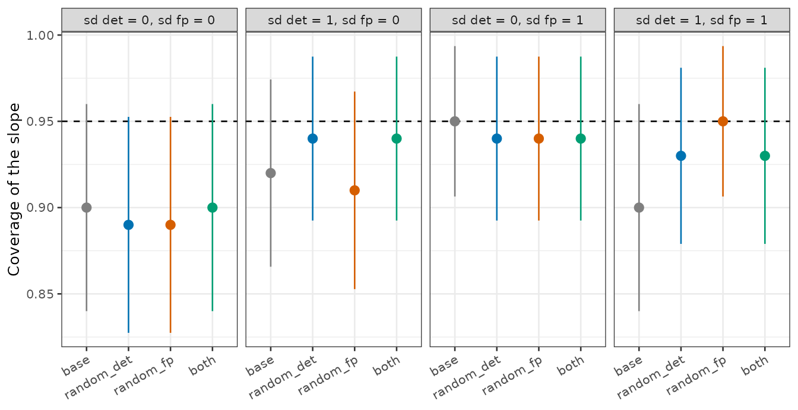
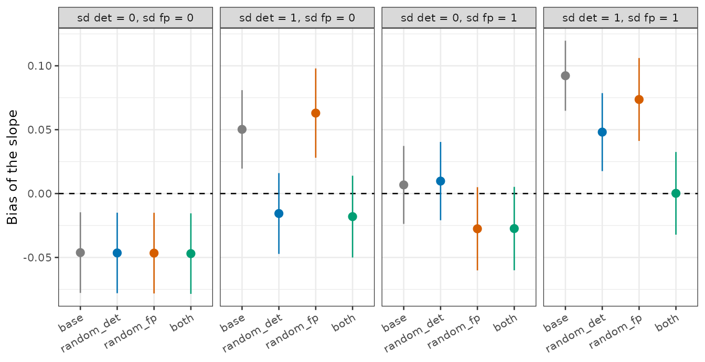
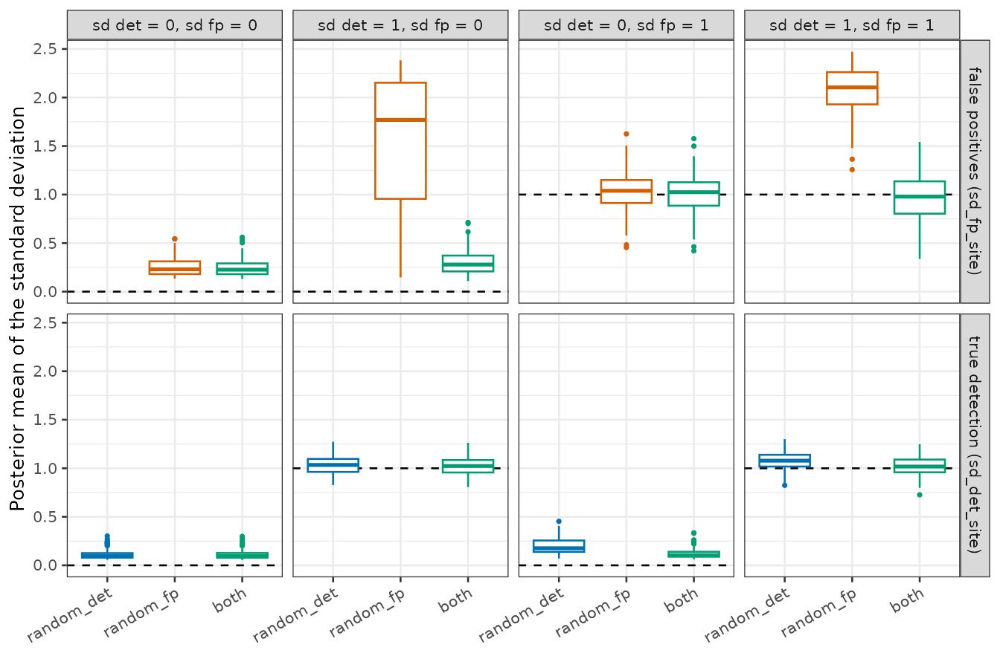
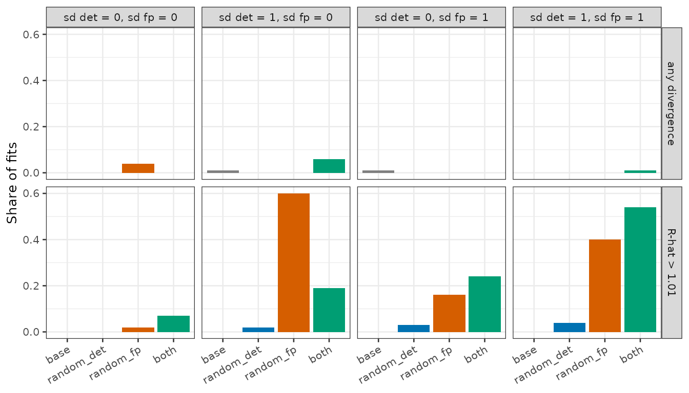
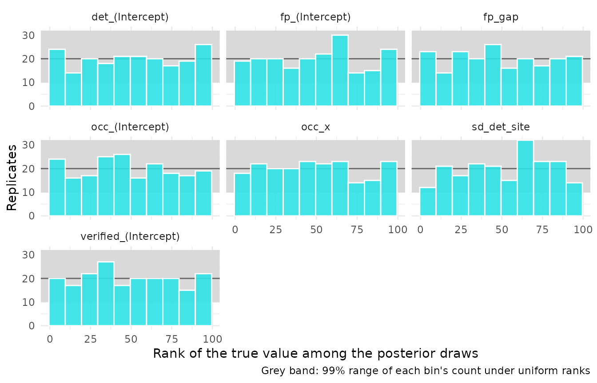

The automated method rarely detects a species equally well at every
occupied site. Recorders placed farther from where animals call, sites
with fewer calling individuals, or louder backgrounds lower the chance
of a true detection, and covariates in det capture only the
part of this that was measured. False positives vary among sites in the
same way, with the sources of sound that the classifier confuses with
the target. crywolf offers a site random intercept for each process:
random_det = TRUE on true detection and
random_fp = TRUE on the false-positive rate. They can be
used alone or together.
This article describes the two effects, shows in simulations what
each one recovers and what it costs, and fits them to the
curiango data. The fitting code is shown but not run when
the article is built.
The model
In the multiple-methods false-positive occupancy model (Miller et al., 2011), at site i and occasion k of the automated method,
\mathrm{logit}(p_{11,ik}) = \mathbf{z}_{ik}^\top \boldsymbol{\alpha} + d_i, \qquad d_i \sim \mathrm{Normal}(0, \sigma_{\mathrm{det}}),
\mathrm{logit}(p_{10,i}) = \gamma_0 + \mathbf{x}_i^\top \boldsymbol{\gamma} + e_i, \qquad e_i \sim \mathrm{Normal}(0, \sigma_{\mathrm{fp}}),
where p_{11,ik} is the probability
of a detection at an occupied site, p_{10,i} the probability of a false positive
at an unoccupied one, \mathbf{z}_{ik}
and \mathbf{x}_i the covariates of
det and fp, and \gamma_0 = \alpha_1 - \Delta the
false-positive intercept, a positive gap \Delta below the detection intercept
(vignette("crywolf")). The site effect on true detection,
d_i, is reported as
sd_det_site (\sigma_{\mathrm{det}}); the one on false
positives, e_i, as
sd_fp_site (\sigma_{\mathrm{fp}}). Both standard
deviations have half-Normal priors with scale 1
(fp_priors(det_site_sd = , fp_site_sd = )). The verified
method has no site effect: its detection probability r_{11} is the same at every occupied site, up
to the covariates of ver.
The two effects act on different branches of the likelihood. Each site has a single latent state, occupied or not: d_i matters only if the site is occupied and e_i only if it is not. The verified data, which never contain false positives, are what tell the two branches apart.
m <- fp_occu(data, occ = ~ x, fp = ~ 1, random_det = TRUE)
m_both <- fp_occu(data, occ = ~ x, fp = ~ 1, random_det = TRUE, random_fp = TRUE)With both effects on, fp_occu() warns that the chains
mix slowly; the simulations below show why.
Simulations
Design
Each simulated dataset had 300 sites, 20 automated occasions per
site, and 30% of the sites verified on 3 occasions each. Occupancy
depended on a standardized covariate with intercept 0 (occupancy 0.5 at
the mean) and slope -0.8; at the
reference, true detection was 0.6, false positives 0.05, and verified
detection 0.6. The logit of true detection and of the false-positive
rate varied among sites with standard deviations \sigma_{\mathrm{det}} and \sigma_{\mathrm{fp}}, each 0 or 1, which
gives four scenarios. Every dataset was fitted with four models: no site
effect (base), random_det,
random_fp, and both, with the default priors of
fp_priors() and 4 chains of 1000 warm-up and 1000 sampling
iterations (adapt_delta = 0.95). There were 100 replicates
of each scenario, 1600 fits in all, and every model of a replicate saw
the same data. The fits used the prototype of the Stan program in
dev/random-det/, written before the option entered the
package. The package version uses the same likelihood functions and
differs only in how it passes a switched-off effect (as a data vector of
zeros, which is faster).
The occupancy slope
ggplot2::ggplot(summ, ggplot2::aes(model, coverage, colour = model)) +
ggplot2::geom_hline(yintercept = 0.95, linetype = "dashed") +
ggplot2::geom_pointrange(ggplot2::aes(ymin = coverage - 2 * coverage_se,
ymax = pmin(1, coverage + 2 * coverage_se))) +
ggplot2::facet_wrap(~ scenario, nrow = 1) +
ggplot2::scale_colour_manual(values = colours) +
ggplot2::labs(x = NULL, y = "Coverage of the slope") +
panel_theme
Coverage of the 95% interval of the occupancy slope in each scenario. Bars span two Monte Carlo standard errors; the dashed line is the nominal coverage.
ggplot2::ggplot(summ, ggplot2::aes(model, bias, colour = model)) +
ggplot2::geom_hline(yintercept = 0, linetype = "dashed") +
ggplot2::geom_pointrange(ggplot2::aes(ymin = bias - 2 * bias_se,
ymax = bias + 2 * bias_se)) +
ggplot2::facet_wrap(~ scenario, nrow = 1) +
ggplot2::scale_colour_manual(values = colours) +
ggplot2::labs(x = NULL, y = "Bias of the slope") +
panel_theme
Bias of the posterior mean of the occupancy slope (true value -0.8). Bars span two Monte Carlo standard errors.
Coverage stayed between 0.89 and 0.95 in every scenario and model. With 100 replicates, its Monte Carlo standard error is 0.02 to 0.03, so coverage alone separates the models poorly. In the scenario without any site variation all four models gave the same coverage, 0.90, and the same bias, -0.046, away from zero (the slope was estimated slightly steeper than -0.8): a property of this design and its data, shared by every model, not of the site effects. The Monte Carlo standard error of each bias is about 0.016.
The bias is more telling. When true detection varied among sites, the
model without site effects attenuated the slope towards zero by 0.050
(detection varying alone) and 0.092 (both varying).
random_det removed the first, -0.016, and halved the
second, 0.048; with both effects the bias was 0.000.
random_fp alone did not help when detection varied: 0.063
and 0.074. When only the false-positive rate varied, no model was
clearly biased. The biases are small next to the width of the intervals
in this design, which explains why the coverage barely moved.
The standard deviations of the site effects
sds <- rbind(
data.frame(sc[c("scenario", "model")], effect = "true detection (sd_det_site)",
estimate = sc$sd_det_est, truth = sc$sigma_det),
data.frame(sc[c("scenario", "model")], effect = "false positives (sd_fp_site)",
estimate = sc$sd_fp_est, truth = sc$sigma_fp))
fits_it <- ifelse(grepl("^true", sds$effect), sds$model %in% c("random_det", "both"),
sds$model %in% c("random_fp", "both"))
sds <- sds[fits_it & !is.na(sds$estimate), ]
ggplot2::ggplot(sds, ggplot2::aes(model, estimate, colour = model)) +
ggplot2::geom_hline(ggplot2::aes(yintercept = truth), linetype = "dashed") +
ggplot2::geom_boxplot(outlier.size = 0.6) +
ggplot2::facet_grid(effect ~ scenario) +
ggplot2::scale_colour_manual(values = colours) +
ggplot2::labs(x = NULL, y = "Posterior mean of the standard deviation") +
panel_theme
Posterior means of the standard deviations of the site effects, for the models that estimate each one. Dashed lines are the true values.
random_det recovered the variation in true detection:
the median estimate of sd_det_site was 1.03 and 1.08 for a
true value of 1. Without such variation it stayed near zero (0.09),
where the half-Normal prior keeps the posterior mean slightly above it.
Fitted together, the two effects recovered both standard deviations:
sd_det_site 1.02 and sd_fp_site 0.98 when both
were 1.
random_fp alone did something else. When only detection
varied, it estimated a median sd_fp_site of 1.77 although
the false-positive rate was the same at every site, and 2.10 when the
true value was 1. Variation in true detection makes the number of
detections vary among occupied sites more than the model allows, and
without a site effect on detection the only place to put that variation
is the false-positive rate. The estimates of sd_fp_site are
then wrong, and so are the false-positive rates of single sites. A large
sd_fp_site alone is therefore not evidence that false
positives vary among sites.
Convergence and cost
conv <- rbind(
data.frame(summ[c("scenario", "model")], what = "R-hat > 1.01", share = summ$rhat),
data.frame(summ[c("scenario", "model")], what = "any divergence", share = summ$divergent))
ggplot2::ggplot(conv, ggplot2::aes(model, share, fill = model)) +
ggplot2::geom_col() +
ggplot2::facet_grid(what ~ scenario) +
ggplot2::scale_fill_manual(values = colours) +
ggplot2::labs(x = NULL, y = "Share of fits") +
panel_theme
Share of fits with a largest R-hat above 1.01 or with any divergent transition.
random_det alone converged in nearly every fit: the
largest R-hat exceeded 1.01 in at most 4% of them.
random_fp alone mixed poorly whenever detection varied (60%
and 40% of fits), the same symptom as its wrong standard deviations.
With both effects the share was 7% to 54%, highest when both rates
varied. Both standard deviations were recovered, so the two effects
appear identifiable in this design, but only through the occupancy
state, which is itself uncertain; our reading is that the chains move
slowly between explanations of the same detections. Run longer chains
with both effects, and check R-hat and the effective sample sizes of
sd_det_site and sd_fp_site before using the
estimates. Divergent transitions occurred in at most 6% of the fits of
any model and scenario.
A fit took about 2 minutes without site effects and 6 to 9 minutes with them, with the four chains run one after another on one core.
Simulation-based calibration
The simulations above use one set of parameter values.
Simulation-based calibration checks the model over the whole prior:
fp_sbc() draws the parameters from the priors, simulates
data, fits the model, and records the rank of each true value among the
posterior draws, which should be uniform when the posterior is computed
correctly (vignette("calibration")). With the design of the
SBC in that article (80 sites, 6 occasions, 200 replicates) and
random_det = TRUE:
sim <- simulate_fp(nsite = 80, nocc = 6, seed = 1)
sbc <- fp_sbc(sim$data, occ = ~ x, fp = ~ 1, random_recorder = FALSE,
random_det = TRUE, reps = 200, parallel = TRUE,
fit_args = list(chains = 2, parallel_chains = 1, iter_warmup = 400,
iter_sampling = 500, threads_per_chain = 1))
summary(sbc)
#> Simulation-based calibration
#> mean_rank: near 0.5 when the posterior is unbiased; p_uniform: chi-squared
#> test of uniform ranks (small values flag a problem).
#>
#> parameter n mean_rank p_uniform divergent
#> det_(Intercept) 200 0.511 0.8165 0.01
#> fp_(Intercept) 200 0.506 0.3586 0.01
#> fp_gap 200 0.496 0.7598 0.01
#> occ_(Intercept) 200 0.488 0.6579 0.01
#> occ_x 200 0.491 0.8343 0.01
#> sd_det_site 200 0.522 0.0882 0.01
#> verified_(Intercept) 200 0.494 0.8343 0.01
plot(sbc)
Ranks of the true values among 99 posterior draws in 200 replicates of simulation-based calibration with a site effect on true detection (80 sites, 6 occasions). The grey band is the 99% range of each bin’s count under uniform ranks.
No rank distribution departs clearly from uniform; the smallest
p-value of the seven tests is 0.088 (sd_det_site), not
small once seven are made, and 2 of the 200 fits had divergent
transitions. With six occasions per site each d_i is estimated from few detections, so this
design tests the hierarchical part of the model under weak
information.
The curiango data
The curiango data (Piatti et al., 2026) were fitted in
vignette("markov") with and without a term for runs of
detections, with the nights at each site as the sites of the model. The
run term improved the fit by far, but the posterior predictive check of
both models still gave a Bayesian p-value of 0: the number of detections
varied among nights more than either model expected. A site effect on
true detection is one explanation, since a nightjar calling close to the
recorder on one night and farther on another changes the detection
probability of the whole night. The four combinations were fitted
(dev/precompute-curiango-random-det.R):
fit <- function(markov, random_det) {
fp_occu(d, occ = ~ temp + rh + moon, det = ~ bio + aci, fp = ~ 1,
markov = markov, random_det = random_det, random_recorder = TRUE,
chains = 4, parallel_chains = 4, threads_per_chain = 4, seed = 1)
}
m <- list(independent = fit(NULL, FALSE), markov = fit("time", FALSE),
random_det = fit(NULL, TRUE), random_det_markov = fit("time", TRUE))where d is built as in vignette("markov").
The fits with random_det took about 10 minutes each with
four chains of four threads, against 5 without it. All four converged:
the largest R-hat was at most 1.008, the smallest bulk effective sample
size at least 691, with no divergent transitions.
data.frame(model = names(cur$ppc), row.names = NULL,
ppc_p_value = round(purrr::map_dbl(cur$ppc, "p_value"), 2),
sd_det_site = purrr::map_chr(names(cur$summary), function(n) {
if (any(cur$summary[[n]]$variable == "sd_det_site")) ci(n, "sd_det_site") else "-"
}))
#> model ppc_p_value sd_det_site
#> 1 independent 0.00 -
#> 2 markov 0.00 -
#> 3 random_det 0.57 1.06 (0.93 to 1.20)
#> 4 random_det_markov 0.46 0.80 (0.69 to 0.92)
cur$loo[c("model", "elpd_diff", "se_diff")]
#> model elpd_diff se_diff
#> 1 random_det_markov 0.0000 0.00000
#> 2 markov -112.5801 22.16062
#> 3 random_det -284.2143 37.92443
#> 4 independent -562.0524 64.78959With the site effect, the posterior predictive check no longer flags
the variation among nights: its p-value is 0.57 without the run term and
0.46 with it. This is expected rather than informative:
fp_ppc() replicates each night with its own fitted effect,
and its discrepancy is computed night by night, so a night effect
absorbs what the check measures. Leave-one-site-out comparison, which
predicts each night without its own effect, is the better evidence. The
estimated standard deviation is large, 0.80 (0.69 to 0.92) on the logit
scale with the run term, so the probability of detecting a calling
nightjar differs widely among nights. Leave-one-site-out comparison,
with the site effects integrated out (no site had a Pareto k above 0.7 in any model), ranks the model
with both terms first, ahead of the run term alone by 113 (standard
error 22).
The two terms describe different things. The site effect lets whole nights be more or less detectable; the run term makes detections cluster within a night. Only the run term reproduces the observed runs of consecutive detections:
tab <- rbind(observed = as.numeric(cur$runs_observed),
do.call(rbind, purrr::map(cur$runs_simulated,
function(m) round(colMeans(m)))))
colnames(tab) <- names(cur$runs_observed)
tab
#> 1 2 3 4 5+
#> observed 760 184 66 33 37
#> independent 1259 146 31 9 4
#> markov 722 182 74 32 34
#> random_det 1142 142 34 12 10
#> random_det_markov 742 173 63 28 37The occupancy effects of temperature and humidity both move away from
zero, by about one posterior standard deviation: with both terms,
temperature is -0.33 (-0.50 to -0.17) and relative humidity -0.90 (-1.09
to -0.72), against -0.25 (-0.40 to -0.10) and -0.82 (-0.98 to -0.66)
with the run term alone. The intervals overlap broadly; in our reading
the ecological conclusions of vignette("markov") do not
change.
Leave-one-site-out comparison
loo() compares models by how well each predicts a site
left out of the fit. A left-out site has no estimate of its own site
effects, so its predictive density averages the likelihood over the
distribution of the effects. With random_det or
random_fp, loo() computes that integral by
Gauss-Hermite quadrature for every posterior draw: 100 nodes with one
site effect and a grid of 30 nodes per effect with two (argument
nodes). The conditional log-likelihood, with each site’s
own effect plugged in (integrate = FALSE), answers a
different question and gives many sites with unreliable Pareto k.
Which to use
- Covariates first. A measured cause of variation in detection (noise,
distance, recorder model) belongs in
det, and a measured cause of false positives infp. A covariate costs one coefficient; a site effect costs one parameter per site. -
random_det = TRUEfor variation in true detection among sites that the covariates do not explain. In the simulations it left bias and coverage unchanged when there was no such variation, at about three times the run time, and reduced the bias of the occupancy slope when there was. -
random_fp = TRUEonly together withrandom_detunless there is reason to think that detection does not vary among sites: alone, it mistakes variation in detection for variation in false positives. - Both, when both kinds of variation are plausible, with longer chains and a close look at the diagnostics.
- None of them fixes false positives that follow an environmental
gradient correlated with occupancy. That is a matter for the
fpformula (vignette("crywolf")).
References
Miller, D. A., Nichols, J. D., McClintock, B. T., Grant, E. H. C., Bailey, L. L., & Weir, L. A. (2011). Improving occupancy estimation when two types of observational error occur: non-detection and species misidentification. Ecology, 92, 1422–1428. https://doi.org/10.1890/10-1396.1
Piatti, L., de Sousa, D. L. H., Oliveira, B. S., de Melo, A. V., Sugai, L. S. M., & Provete, D. B. (2026). Methodological choices influence ecological inference in passive acoustic monitoring of a Neotropical nightjar. Journal of Avian Biology, in press.